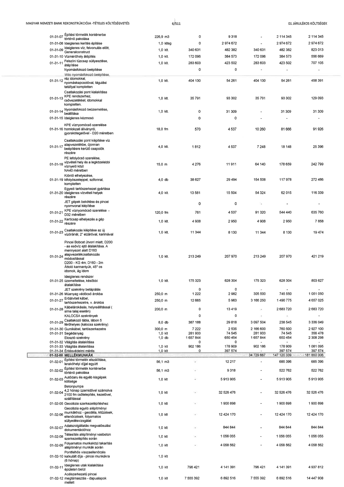

| Tétel | Megjegyzés | Menny. | Egys. | Anyag e.ár (net HUF) | Díj e.ár (net HUF) | Anyag összesen (net HUF) | Díj összesen (net HUF) | Anyag+Díj összesen (net HUF) |
|---|---|---|---|---|---|---|---|---|
| 01-31-07 Építési törmelék konténerbe történő pakolása | NaN | 226,9 | m3 | 0 | 9 318 | 0 | 2 114 345 | 2 114 345 |
| 01-31-08 Ideiglenes kerítés építése | NaN | 1,0 | kltsg | 0 | 2 974 672 | 0 | 2 974 672 | 2 974 672 |
| 01-31-09 Ideiglenes víz, felvonulás előtt, Generalconstruct | NaN | 1,0 | klt | 340 631 | 482 382 | 340 631 | 482 382 | 823 013 |
| 01-31-10 Vízmérőhely átépítés | NaN | 1,0 | klt | 172 096 | 384 573 | 172 096 | 384 573 | 556 669 |
| 01-31-11 Felszíni tűzcsap süllyesztése, átépítése | NaN | 1,0 | klt | 283 603 | 423 502 | 283 603 | 423 502 | 707 105 |
| 01-31-12 Nyomásfokozó beépítése Wilo nyomásfokozó beépítése, réz idomokkal, nyomáskapcsolóval, tágulási tartályal komplett | NaN | 1,0 | klt | 404 130 | 54 261 | 404 130 | 54 261 | 458 391 |
| 01-31-13 Csatlakozási pont kialakítása KPE rendszerhez, csővezetékkel, idomokkal komplett | NaN | 1,0 | klt | 35 791 | 93 302 | 35 791 | 93 302 | 129 093 |
| 01-31-14 Nyomásfokozó beüzemelése, beállítása | NaN | 1,0 | klt | 0 | 31 309 | 0 | 31 309 | 31 309 |
| 01-31-15 Ideiglenes kézmosó | NaN | 0 | NaN | 0 | 0 | 0 | 0 | 0 |
| 01-31-16 KPE víznyomócső szerelése homlokzati állványról, gyorskötegelővel - D20 méretben | NaN | 18,0 | fm | 570 | 4 537 | 10 260 | 81 666 | 91 926 |
| 01-31-17 Csatlakozási pont kiépítése víz alapvezetékbe, újonnan beépítésre kerülő csapolók részére | NaN | 4,0 | klt | 1 812 | 4 537 | 7 248 | 18 148 | 25 396 |
| 01-31-18 PE lefolyócső szerelése, vízvételi hely és a legközelebbi víznyelő közt NA40 méretben | NaN | 15,0 | m | 4 276 | 11 911 | 64 140 | 178 659 | 242 799 |
| 01-31-19 Kiöntő elhelyezése, sarokszeleppel, szifonnal, kompletten | NaN | 4,0 | db | 38 627 | 29 494 | 154 508 | 117 978 | 272 486 |
| 01-31-20 Egyedi tartószerkezet gyártása ideiglenes vízvételi helyek részére | NaN | 4,0 | klt | 13 581 | 15 504 | 54 324 | 62 015 | 116 339 |
| 01-31-21 JET gépek bekötése és pincei nyomvonal kiépítése - KPE víznyomócső szerelése D50 méretben | NaN | 120,0 | fm | 761 | 4 537 | 91 320 | 544 440 | 635 760 |
| 01-31-22 Kerticsap elhelyezés a gép részére | NaN | 1,0 | klt | 4 908 | 2 950 | 4 908 | 2 950 | 7 858 |
| 01-31-23 Csatlakozás kiépítése az új vízóránal, 2" elzáróval, karimával | NaN | 1,0 | klt | 11 344 | 8 130 | 11 344 | 8 130 | 19 474 |
| 01-31-24 Pincei Bobcat útvonl miatt, D200 as esővíz ejtő átalakítása, a mennyezet alatt, D160 alapvezetékcsatlakozás módosítással. D200-KG 4m, D160-2m Átfolyóidomanyák, 45° os idomok, ág idom | NaN | 1,0 | klt | 213 249 | 207 970 | 213 249 | 207 970 | 421 219 |
| 01-31-25 Ideiglenes rendszer üzemeltetése, későbbi átalakítása | NaN | 1,0 | klt | 175 323 | 628 304 | 175 323 | 628 304 | 803 627 |
| 01-31-26 JET szekrény betáplálás Műanyag védőcső árokba | NaN | 250,0 | m | 1 222 | 2 982 | 305 500 | 745 550 | 1 051 050 |
| 01-31-27 Erőátviteli kábel, tartószerkezetre v. árokba | NaN | 250,0 | m | 12 665 | 5 963 | 3 166 250 | 1 490 775 | 4 657 025 |
| 01-31-28 Kábelárokásás, helyreállítással (sima talaj esetén) | NaN | 200,0 | m | 0 | 13 419 | 0 | 2 683 720 | 2 683 720 |
| 01-31-29 KALOCSA szekrények Csatlakozó tábla, lábon (történetes Balocsa szekrény) | NaN | 8,0 | db | 387 188 | 29 818 | 3 097 504 | 238 545 | 3 336 049 |
| 01-31-30 Gumikábel, tartószerkezetre | NaN | 300,0 | m | 7 222 | 2 535 | 2 166 600 | 760 500 | 2 927 100 |
| 01-31-31 Segédanyag | NaN | 1,0 | klt | 281 933 | 74 545 | 281 933 | 74 545 | 356 478 |
| 01-31-32 Elosztó szekrény | NaN | 1,0 | db | 1 657 844 | 650 454 | 1 657 844 | 650 454 | 2 308 298 |
| 01-31-33 Világítás átalakítása | NaN | 1,0 | klt | 902 186 | 178 909 | 902 186 | 178 909 | 1 081 095 |
| 01-31-34 Érintésvédelmi mérés | NaN | 1,0 | klt | 0 | 397 574 | 0 | 397 574 | 397 574 |
| 01-32-00 MELLÉKMUNKÁK | NaN | NaN | NaN | 0 | 0 | 34 729 667 | 147 120 339 | 181 850 006 |
| 01-32-01 Építési törmelék elszállítása, lerakóhelyi díjjal együtt | NaN | 56,1 | m3 | 0 | 12 217 | 0 | 685 396 | 685 396 |
| 01-32-02 Építési törmelék konténerbe történő pakolása | NaN | 56,1 | m3 | 0 | 9 318 | 0 | 522 762 | 522 762 |
| 01-32-03 Futódaru és egyéb kisgépek költsége | NaN | 1,0 | klt | 0 | 5 913 905 | 0 | 5 913 905 | 5 913 905 |
| 01-32-04 Betonpumpa 4,2 hónap üzemidővel számolva (100 fm csőtelepítés, kezelővel, szállítással) | NaN | 1,0 | klt | 0 | 32 526 476 | 0 | 32 526 476 | 32 526 476 |
| 01-32-05 Geodézia szerkezetépítéshez | NaN | 1,0 | klt | 0 | 1 900 898 | 0 | 1 900 898 | 1 900 898 |
| 01-32-06 Geodézia egyéb alépítményi munkákhoz - geodéta, kitűzések, ellenőrzések, folyamatos süllyedésvizsgálat | NaN | 1,0 | klt | 0 | 12 424 170 | 0 | 12 424 170 | 12 424 170 |
| 01-32-07 Adatszolgáltatás megvalósulási dokumentációhoz | NaN | 1,0 | klt | 0 | 844 844 | 0 | 844 844 | 844 844 |
| 01-32-08 Téliesítés alépítményi vasbeton szerkezetépítés során | NaN | 1,0 | klt | 0 | 1 056 055 | 0 | 1 056 055 | 1 056 055 |
| 01-32-09 Folyamatos munkaközi takarítás alépítményi munkák során | NaN | 1,0 | klt | 0 | 4 058 562 | 0 | 4 058 562 | 4 058 562 |
| 01-32-10 Sorkitöltés visszaellenőrzés kalkulált díja - pincei munkákra (6 hónap) | NaN | 1,0 | klt | 0 | 0 | 0 | 0 | 0 |
| 01-32-11 Ideiglenes utak kialakítása épületen belül | NaN | 1,0 | klt | 796 421 | 4 141 391 | 796 421 | 4 141 391 | 4 937 812 |
| 01-32-12 Acélszerkezetű pincei megtámasztás - alaplapok mellett | NaN | 1,0 | klt | 7 555 392 | 6 892 516 | 7 555 392 | 6 892 516 | 14 447 908 |
